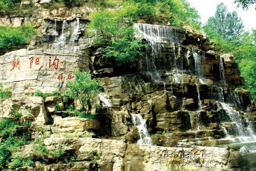
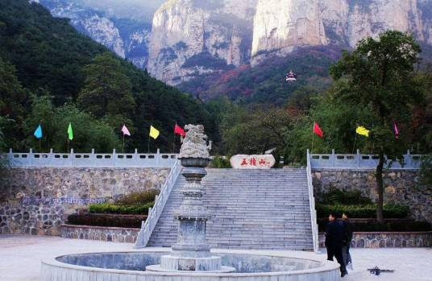
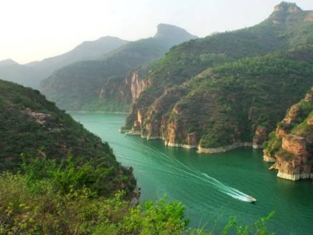
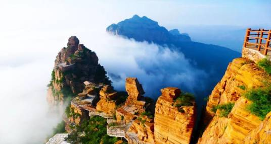

自然风光
七步沟景区，位于河北省邯郸市武安活水乡境内，总面积20平方公里，由门景区、休闲度假区、百瀑峡、罗汉峡、三棱山、马武寨六个景区组成，集绿色、古色、红色旅游资源和独特地质资源之大成。
七步沟景区于2009年5月重新规划建设，总投资12亿元。设有冀南首家滑雪场、高空索道、CS真人射击、拓展训练、游客中心和四星级天门湖酒店。
七步沟景区，是是国家地质公园、国家森林公园腹地，国家AAAA级旅游景区、河北省重点旅游建设项目。
朝阳沟，地处河北省武安市朝阳沟村，距邯郸市80公里，是著名戏剧作家杨兰春老先生的埋骨之地。 朝阳沟景区是根据《朝阳沟》故事的原型地而开发的旅游区.
景区内还保存了杨兰春旧居、李支书旧居、二大娘旧居、栓宝银环旧居、老平旧居、老小孩旧居、有良旧居、小牧童旧居。朝阳沟剧中绳坡峧、野草湾、阳坡垴、跌水岩等大都成为观光的景点，除此以外，可以参观的还有黑龙庙、九连溪、九连瀑、象山、华山洞、山顶草原、龙泉瀑、观日峰、玉峰塔、药王洞、圣母洞等等。朝阳沟是杨兰春的出生地。
朝阳沟是条东西走向的山沟，每当旭日东升，阳光明媚。是个四季朝阳，山清水秀的好地方，这里的山川横看成岭侧成峰，高低远近各不同，有湖有潭，有洞不泉，有冰有川，春夏秋冬时迁景异。春季，漫山遍野的山桃红花，连翘黄花将山谷打扮得流金异彩；夏季，山雄水秀，山川深谷，溪流淳淳，高山流水，山水断跌而下，尤如一幅 册水画卷；秋季，霜打红叶，一片为红，丛林尽染，果实飘香；冬季，北国风光，松涛阵阵，滴水成冰，造就的冰瀑十分状观。朝阳沟马峰岩的雄、圣母洞的奇、百梯路的险，跌水岩的秀。原始的北方山村，真乃是“好山好水好地方，在这里一辈子我也住不烦"。
太行五指山又名五行山，位于太行山东麓，河北省涉县境内，距涉县城区仅5公里，北邻309国道，青兰高速从山前而过，交通便利。太行五指山主峰海拔1283米，占地面积28平方公里，因五座奇峰形似如来佛祖五个手指而得名五指山，相传孙悟空就是被压在五指山下参禅悟道。五指山周围群山环抱，山势巍峨峻秀，植被郁郁葱葱，以“雄、奇、险、秀”著称。景区是集自然风光、森林公园、红色旅游、佛学研修、人文景观、峡谷漂流和滑雪为一体，供游客观光游览、休闲度假、餐饮娱乐、体验健康生活的大型风景旅游胜地。太行五指山景区是国家级风景名胜区、国家AAAA级旅游景区，已荣获“河北省休闲农业和乡村旅游示范点”、“十佳林业重点企业”、“邯郸最佳旅游投资机构”、“河北影视基地”等荣誉称号。
京娘湖风景区，位于河北省邯郸市武安市西北部山区的口上村北，太行山脉腹地，亦称口上水库，素有“太行三峡”之称。
据史料记载，赵匡胤千里送京娘的故事便发生在这里。京娘湖因宋太祖送京娘的故事发生在这一带，故得此名。
京娘湖始建于1966至1969年，最大水面2500亩，库容量3200万立方米。湖面呈倒“人”字型，分东西两支，长短各3公里。这里已凭借其中山川水色开辟成为旅游风景区和避暑胜地。包括高峡平湖，仙灵峡，宋祖峡，京娘峡，怒狮昂首，神龟探头，雄鹰视，屯山积粮神女舍粟叠桥戏月驼峰竟秀，妆寒潭遗恨，云崖寄志古岩飘绵，青峰开屏危岩藏经等18景点。
京娘湖景区以独特的自然资源以及人文资源，泓扬地方特色文化为契机，融丰富的区域文化于青山秀水之中，堪称“冀南太行明珠”。
东太行景区，位于河北邯郸武安市境内，因所处太行山东麓而得名。由中景信集团投资打造，修建在海拔千米上的绝壁玻璃栈道，堪称太行山人工奇观。规划总面积26平方公里，最高海拔1428米，与美国科罗拉多大峡谷同属丹霞地貌。
东太行景区，是一处集太行山雄、奇、险、峻和巧石、云海、清幽、变幻于一体的山岳型自然景区。历史上著名的129师和许多老一辈革命家曾在这里驻扎战斗、生活。
修建在海拔1000米以上的绝壁上，蜿蜒盘旋于山脊之上，神似游龙，玻璃栈道、石质栈道、观景台等一应俱全，建成后将成为华北地区最长的山脊栈道。景区开放后，游客可登临栈道，近距离感受大山的雄壮与秀美。因地势高，雨后乍晴，常有缭绕的白云沿着山谷升起，沿着站到绵延，行走于栈道之上，如踏云而行，此时漫步栈道，美哉壮哉，因此有“云端栈道”之美誉。